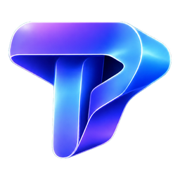

macOS · M 시리즈
DMG를 열고 Toris Studio를
응용 프로그램 폴더로 옮기세요.

Toris Studio 공식 릴리스 ↗채널과 콘텐츠를 관리하고, 관심 키워드와 트렌드를 살펴보세요. SNS 로그인, 로컬 AI, 영상 작업을 macOS·Windows 앱 한곳에서 이어갑니다.
Mac: Apple 메뉴 → 이 Mac에 관하여. ‘칩’에 Apple M 시리즈가 표시되면 Apple Silicon, ‘프로세서’에 Intel이 표시되면 Intel 파일을 선택하세요.
Windows: 설정 → 시스템 → 정보 → 시스템 종류에서 x64 기반 프로세서를 확인하세요. ARM 기반 Windows 전용 설치 파일은 현재 제공하지 않습니다.
바로 다운로드할 수도 있습니다. 최신 버전의 변경 사항과 파일 목록은 공식 릴리스에서 확인하세요.
DMG를 열고 Toris Studio를
응용 프로그램 폴더로 옮기세요.
Intel 프로세서를 사용하는 Mac에
맞는 DMG 설치 파일입니다.
설치 프로그램을 실행하고
안내에 따라 설치하세요.
Mac은 응용 프로그램 폴더, Windows는 시작 메뉴에서 앱을 열 수 있습니다.
macOS는 OrbStack, Windows는 Docker Desktop을 실행한 뒤 ‘DB 컨테이너 실행 · 초기화’를 누르세요. 수집 API와 AI 연결 정보를 등록하면 내 채널과 콘텐츠를 관리할 수 있습니다. 키와 OAuth 토큰은 기기의 보안 저장소에 보관합니다.
연결 설정 → 앱 업데이트 → 업데이트 확인. 새 버전의 안내를 확인한 뒤 작업 내용을 저장하고 설치하면 앱이 다시 시작됩니다. 수동 설치 파일도 이 페이지에서 받을 수 있습니다.
설치 파일과 업데이트 메타데이터는 GitHub Releases에서 제공하며, 같은 릴리스 파일을 GitHub Packages의 OCI 아티팩트로도 보관합니다. 패키지 도구에서 필요한 버전 태그를 지정해 받을 수 있습니다.
ghcr.io/toriskr/toris-studio/desktop:<버전>